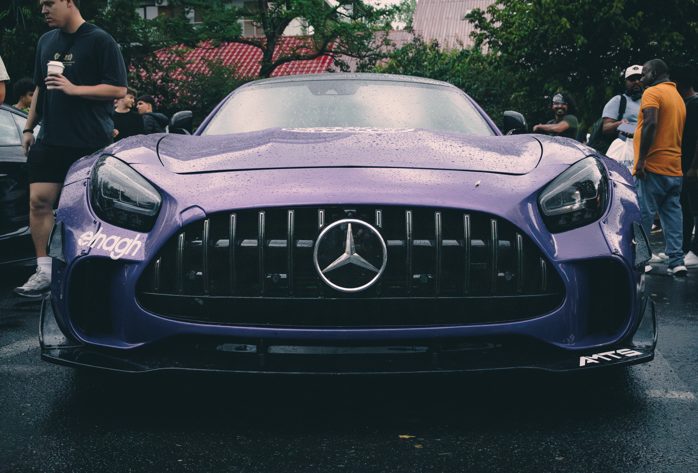
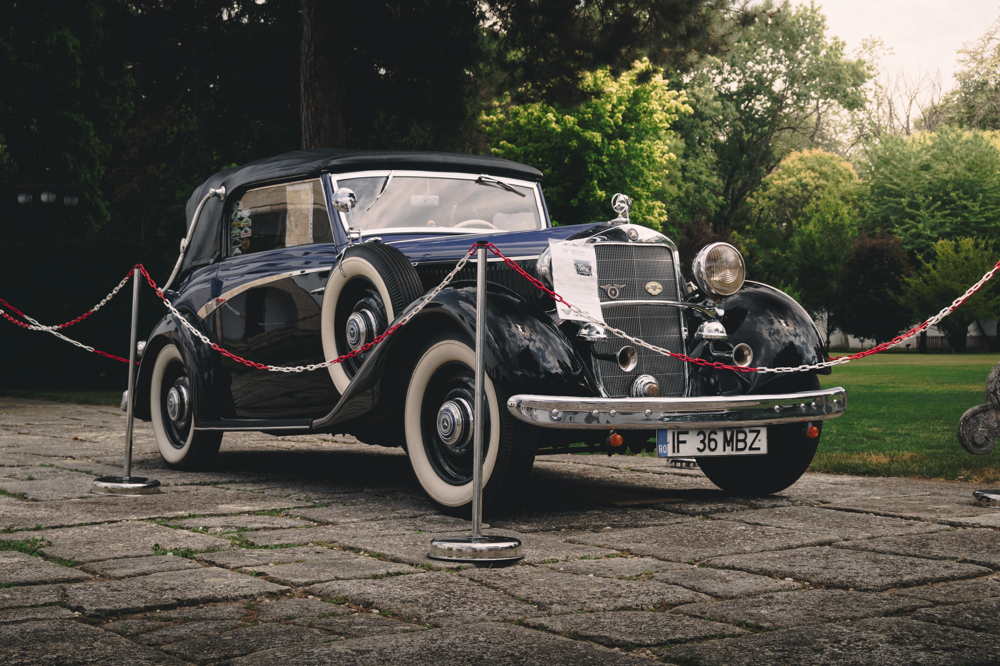
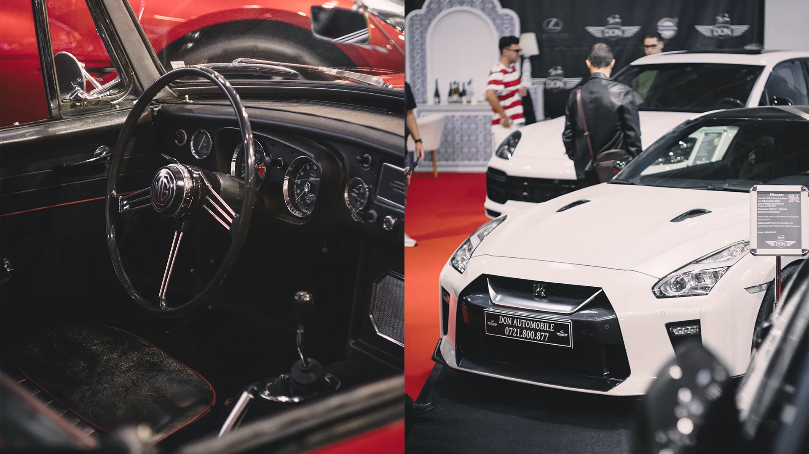
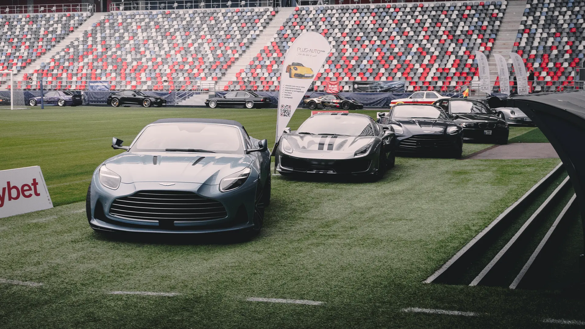

In August 2025 am fost la un eveniment numit Grand Rally Tour si am capturat pozele urmatoare
De asemenea am capturat si niste imagini cu masini de epoca
Si de la Salonul Auto Bucuresti
Si de la un eveniment numit Dropdown care prezinta masini sport si modificateSi cele mai recente poze capturate